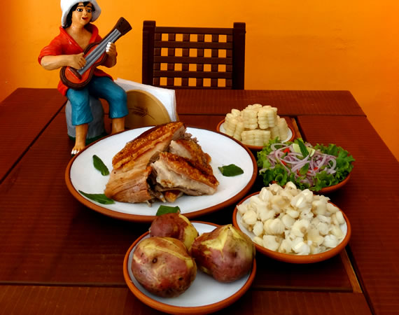

Nuestras Comidas Típicas
Cuando nos dicen Áncash casi siempre lo relacionamos con el Callejón de Huaylas o el Parque Nacional Huascarán; y si bien, los turistas viajan para conocer estos atractivos turísticos, Áncash es un departamento que encierra en su gastronomía, un gran legado de sus antiguos pobladores. Este paraíso norteño comparte en su geografía costa y sierra, lo que lo hace muy rico en variedad de productos para la gastronomía. Puedes disfrutar de un suculento Chichincaldo o un delicioso Ceviche de chocho, todo acompañado de chica de jora o un calentito, cualquiera sea tu opción, en Áncash no hay pierde. En Marca Perú nombramos algunas de los platos típicos y bebidas más conocidas.
Kuchi-Kanka
Este platillo basa se en el cerdo, pero es importante para este platillo que no exceda el año de edad. El lechón es macerado de un día para el otro con vinagre, ajos, ají mirasol, pimienta y comino; se cocina a temperatura moderada. Se sirve acompaña de papa dorada y ensalada. Esta delicia también es típica de Huancavelica.
Picante de Cuy

El Picante de Cuy, también llamado Cuy Colorado, es una receta pre-inca, originaria de la Sierra peruana. Con el paso de los años se ha extendido por todo el país, consolidándose como uno de nuestros platillos más populares y deliciosos. Si quieres aprender cómo preparar Picante de Cuy, este es el momento.
Caldo de Cabeza

El Caldo de Cabeza es una preparación clásica del Perú. Se trata de un plato típico, cuya sustancia y sabor característico es perfecto para calentar el cuerpo y el paladar. Este caldo tiene la particularidad de ser rico en vitamina B, por lo que resulta muy nutritivo. Por ello y más es una buena entrada en los restaurantes peruanos.